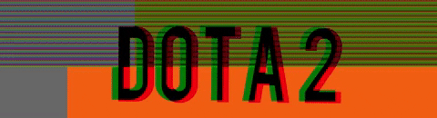
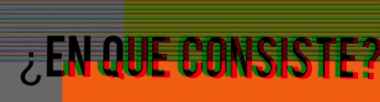
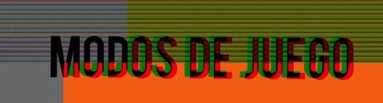
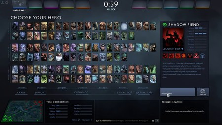
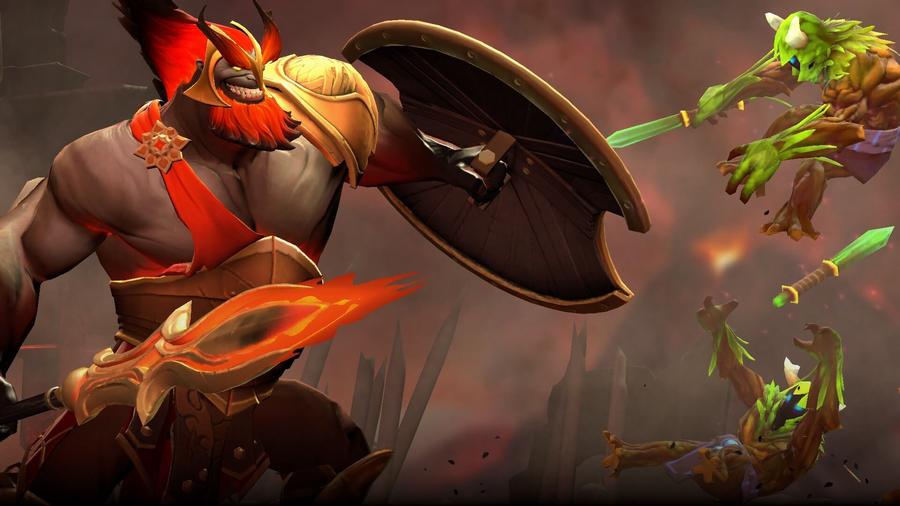
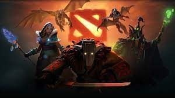

Es un videojuego perteneciente al genero de Arena de batalla en linea ARTS, también conocido como MOBA, lanzado el 9 de julio del año 2013, el juego fue desarrollado por la empresa Valve Corporation, es un juego muy competitivo que organiza increibles torneos en arenas mundiales que son llenados hasta su maxima capacidad y dan premios con cantidades asombrosas de dinero
    
Se juegan partidas entre dos equipos de 5 jugadores defendiendo su base del equipo contrario, cada jugador controla a un personaje que se les conoce como Heroes que tienen habilidades y se usan de diferente forma dependiendo tu forma de jugar ya sea agresiva, defensiva etc.
Durante una partido y a lo largo de esta partida los jugadores acumulan experiencia para que sus Heroes se hagan mas fuertes y sea mas sencillo vencer al rival, un equipo gana al ser el primero en destruir la base enemiga, para lograr esto es necesario jugar en equipo y pensar siempre cada movimiento. tambien es necesario tener una comunicacion buena con tu equipo para que no haya problemas al momento de atacar al enemigo y saber cuando pelear.
Partidas personalizadas: